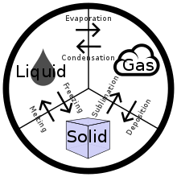

Main article: Properties of water See also: Water (data page) and Water model Water (H2o) is a polar inorganic compound that is at room temperature a tasteless and odorless liquid, nearly colorless with a hint of blue. This simplest hydrogen chalcogenide is by far the most studied chemical compound and is described as the "universal solvent" for its ability to dissolve many substances.[8][9] This allows it to be the "solvent of life":[10] indeed, water as found in nature almost always includes various dissolved substances, and special steps are required to obtain chemically pure water. Water is the only common substance to exist as a solid, liquid, and gas in normal terrestrial conditions.[11]
Along with oxidane, water is one of the two official names for the chemical compound H 2O; it is also the liquid phase of H 2O. The other two common states of matter of water are the solid phase, ice, and the gaseous phase, water vapor or steam. The addition or removal of heat can cause phase transitions: freezing (water to ice), melting (ice to water), vaporization (water to vapor), condensation (vapor to water), sublimation (ice to vapor) and deposition (vapor to ice).
Water differs from most liquids in that it becomes less dense as it freezes.[16] In 1 atm pressure, it reaches its maximum density of 1,000 kg/m3 (62.43 lb/cu ft) at 3.98 °C (39.16oF).[17]The density of ice is 917 kg/m3(57.25 lb/cu ft), an expansion of 9%.[18][19] This expansion can exert enormous pressure, bursting pipes and cracking rocks (see Frost weathering).[20] In a lake or ocean, water at 4oC (39.2 oF) sinks to the bottom, and ice forms on the surface, floating on the liquid water. This ice insulates the water below, preventing it from freezing solid. Without this protection, most aquatic organisms would perish during the winter.[21]
